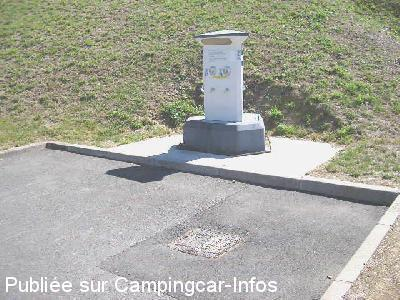
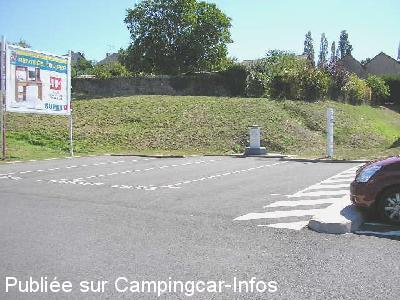

AS = Aire de services uniquement de :
LA CHÂTAIGNERAIE
(N° 389)
Accès/adresse :
Rue de la Prée / Avenue du Général de Gaulle
Parking de Super U
85120 LA CHÂTAIGNERAIE
Parking de Super U
85120 LA CHÂTAIGNERAIE
Latitude : (Nord) 46.64584° Décimaux ou 46° 38′ 45′′
Longitude : (Ouest) -0.74557° Décimaux ou 0° 44′ 44′′
Tarif : 2008
Stationnement : gratuit
100 L d'eau ou 1 h d'électricité, : 2 €
Jetons à la station-services
Services :


Laverie
Autres informations :
Ouvert toute l'année
7 emplacements
Jours et heures d'ouverture :
du lundi au samedi de 8 h 45 à 19 h 30 sauf dimanche et jours fériés.
Tel Super U + 33 (0) 251 878 787

Le 08/09/2005 par jjbo

Le 08/09/2005 par jjbo
de
niceday
le 23/09/2015 :
§ bonjour, une laverie est disponible a 10 metres de la borne de service. 1 machine 8kg, une 18kg et 1 sechoir
§ bonjour, une laverie est disponible a 10 metres de la borne de service. 1 machine 8kg, une 18kg et 1 sechoir
de
gayot thierry
le 14/11/2006 :
borne ferme en cette saison
borne ferme en cette saison
de
salaun
le 13/08/2004 :
Borne sur le parking dans un endroit où se garent les voitures. 2€ les 100 litres. Grille des eaux usées mal conçue.
Borne sur le parking dans un endroit où se garent les voitures. 2€ les 100 litres. Grille des eaux usées mal conçue.